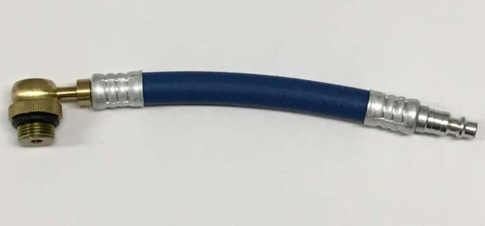
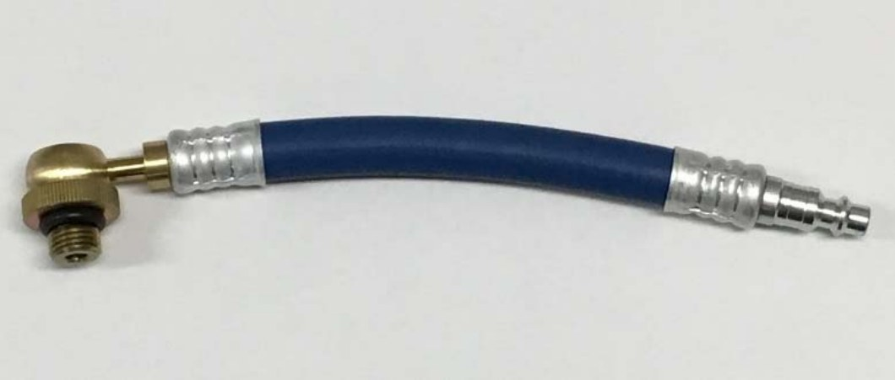
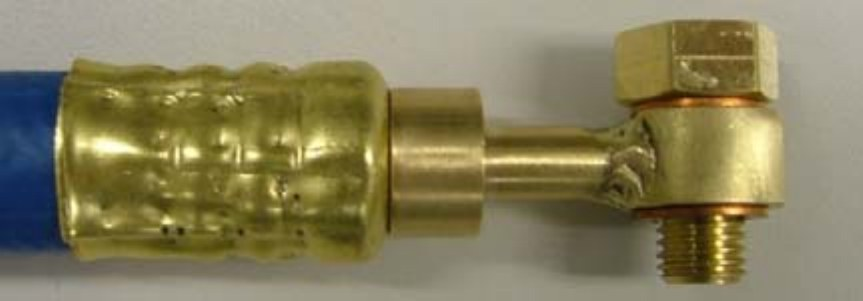

Doc no. MOC-TSB-17-07 // Vol. 17 No. 07 // Aug 9, 2017 // Transmission
Lexus ATF Fill Port Adapters
New94778
MOC has developed 2 new transmission adapters to be used on various Lexus vehicles such as the IS 350 and GS 350. These 2 new adapters screw into the transmission-fluid fill port and require the existing Lexus pressure-port adapter to complete the service.
What's new
Both adapters are used together with the existing Lexus banjo pressure-port adapter (94778) to perform a service.
Contact
For more information, contact the Machine & Equipment Department at 866.244.6621.



Part numbers
| Part No. | Description | Notes |
|---|---|---|
| 94941 | Adapter, ATF, 18mm Swivel | |
| 94942 | Adapter, ATF, 14mm Swivel | |
| 94778 | Adapter, ATF, Lexus Banjo |